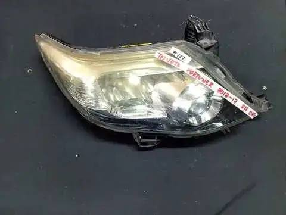
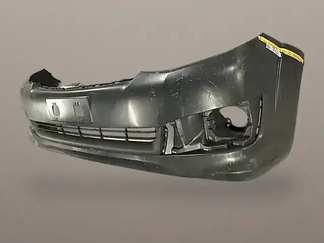
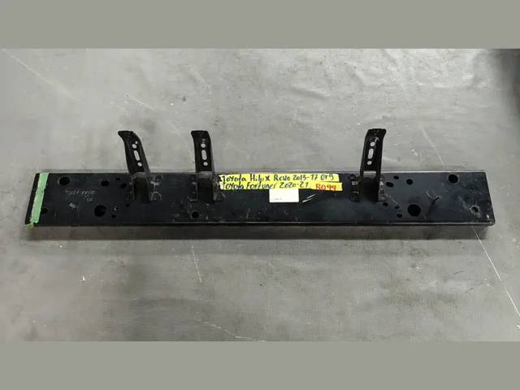
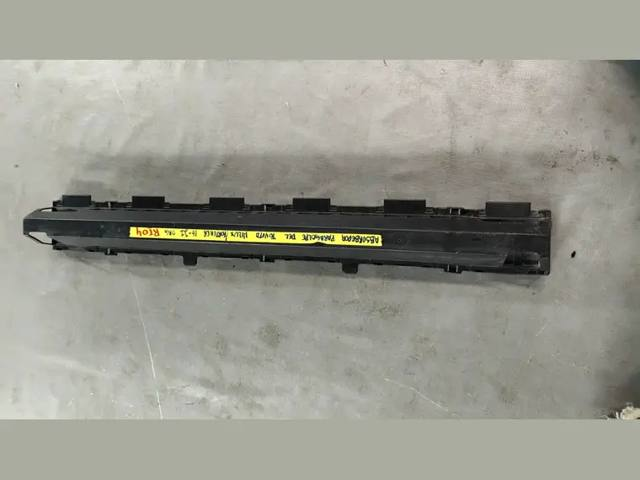
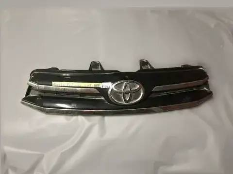
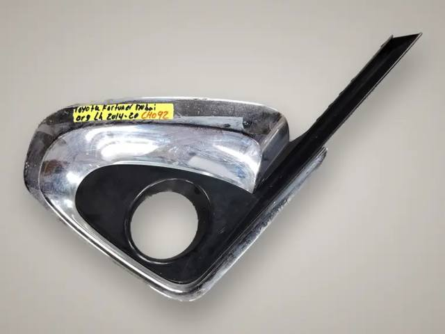
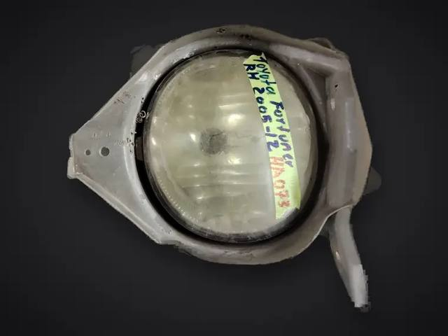

Piezas de carrocería para Toyota Fortuner
27 piezas disponibles hoy para Toyota Fortuner, cada una con su foto y su código: faros y lámparas delanteras (5), defensas delanteras (4), refuerzos delanteros (4), parrillas (3). Dinos el año de tu carro y te confirmamos si le sirve.
- Garantía de 3 días
- Foto real de cada pieza
- Efectivo, Yappy o ACH
- Lunes a sábado, 8:00 a. m. a 5:00 p. m.
Faros y lámparas delanteras para Toyota Fortuner 5
 124Fortuner2016-20 · lado derecho · original
124Fortuner2016-20 · lado derecho · original
127Fortuner2012-17 · lado derecho · original 135Fortuner2021-26 · lado derecho · genérico
135Fortuner2021-26 · lado derecho · genérico 554Fortuner2009-11 · lado derecho · original
554Fortuner2009-11 · lado derecho · original 555Fortuner2009-11 · lado izquierdo · genérico
555Fortuner2009-11 · lado izquierdo · genéricoDefensas delanteras para Toyota Fortuner 4
 726Fortuner2016-20 · original
726Fortuner2016-20 · original
756Fortuner2012-16 · original 758Fortuner2014-20 · original
758Fortuner2014-20 · original 870Fortuner2012-15 · original
870Fortuner2012-15 · originalRefuerzos delanteros para Toyota Fortuner 4
 R057Hilux Revo / Fortuner2015-22 · original
R057Hilux Revo / Fortuner2015-22 · original R098Hilux Revo / Fortuner2015-21 · original
R098Hilux Revo / Fortuner2015-21 · original
R099Hilux Revo / Fortuner2015-21 · original
R104Hilux / Fortuner2016-22 · originalParrillas para Toyota Fortuner 3
 548Fortuner2016-20 · original
548Fortuner2016-20 · original
552Innova / Fortuner2016-20 · original 608Fortuner2020-24 · original
608Fortuner2020-24 · originalCovers de halógena para Toyota Fortuner 3
 CH090Fortuner2012-15 · lado izquierdo · original
CH090Fortuner2012-15 · lado izquierdo · original CH091Fortuner Dubai2014-20 · lado izquierdo · original
CH091Fortuner Dubai2014-20 · lado izquierdo · original
CH092Fortuner Dubai2014-20 · lado izquierdo · originalHalógenas y faros antiniebla para Toyota Fortuner 2
 HA043Hilux / Fortuner2005-11 · lado izquierdo · original
HA043Hilux / Fortuner2005-11 · lado izquierdo · original
HA073Fortuner2005-12 · lado derecho CP007Fortuner
CP007Fortuner DT131Fortuner
DT131Fortuner LT028Fortuner
LT028Fortuner PCh020Hilux / Fortuner
PCh020Hilux / Fortuner TA050Hilux / Fortuner SW4
TA050Hilux / Fortuner SW4